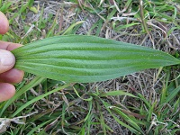
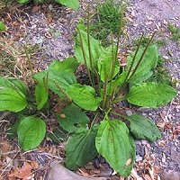
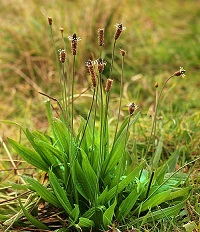

|
|
Identification
There are two varieties of plantain, both having the same uses. There is a narrow leaf variety and a rounded leaf variety.
Both types have very thick veins in the leaves, you can see these more if you look on the backs of the leaves.
At the bottom of the plants, the stems should have a purplish tint. As the plants mature and go to seed, the flowers grow very tall and are very slender.

Information
|

|
|
When to look: Very early Spring - Freezing weather
Where to look: Everywhere, very common in missouri. Fields and yards.
Edible Parts:
Leaves
- Can be chewed and used as a poultice for bites, stings, cuts and rashes
- Young leaves can be eaten raw in salads, high in vitamins A, C, and K
- Can be dried and used as a tea
|
|

|
Flowers
- Can be ground up and used for tea
Roots
- Can be chewed to help with toothache pain
|
|  |
Plantain is one of the most medicinal and common plants in Missouri.
It has been used medicinally by Native Americans, the Chinese, and Europeans alike for centuries.
Plantain was taken commonly as an expectorant (helping with a phlegm), a diuretic, to reduce inflammation,
indigestion, loss of appetite, the list goes on and on. If you have a medical issue, research into Plantain
because more than likely there has been some use of it to treat what you have.
There are no look alikes to this plant, most people from Missouri have seen it all their life.
|
|